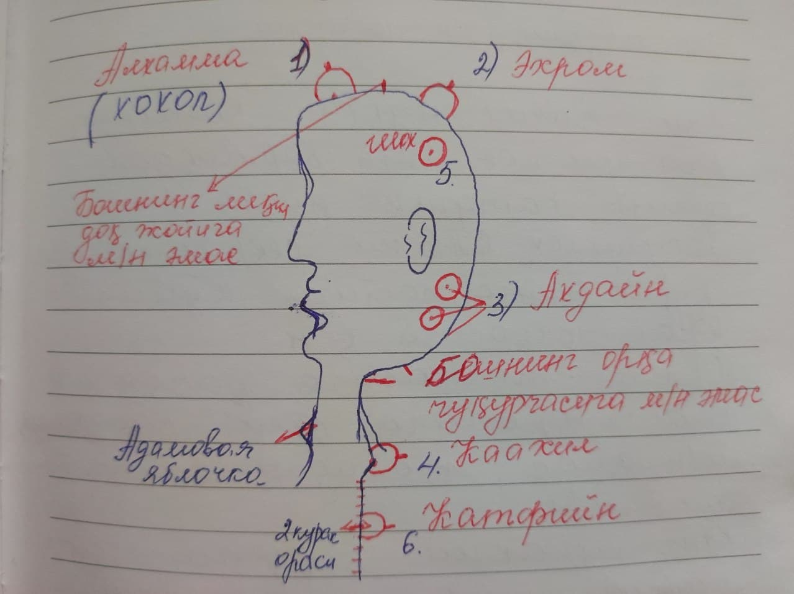
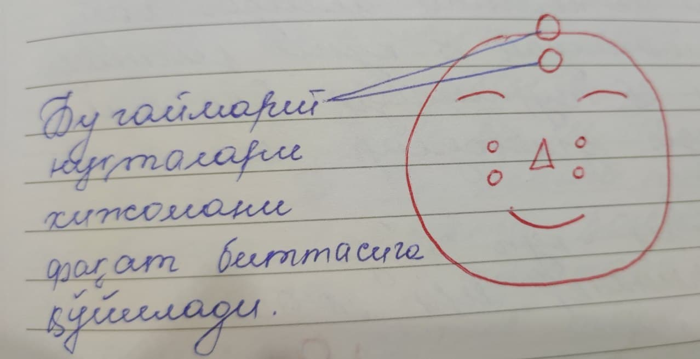
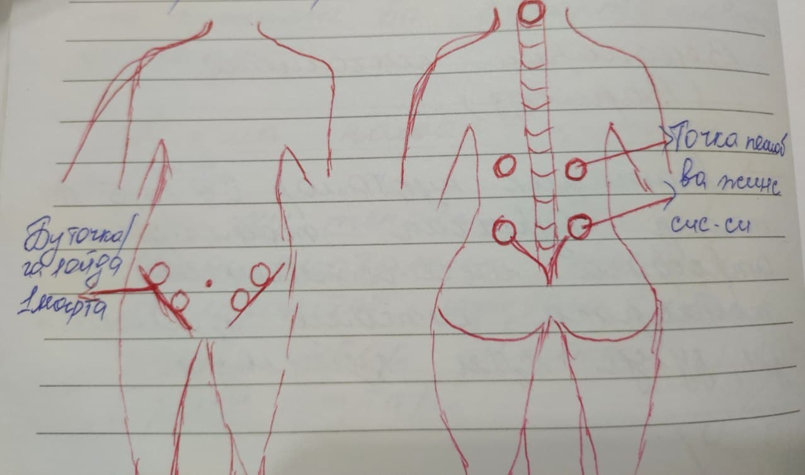
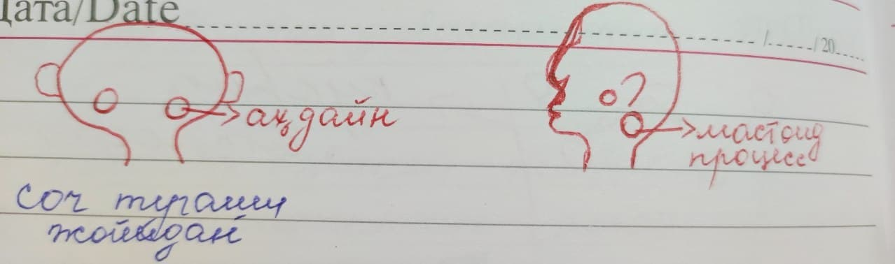
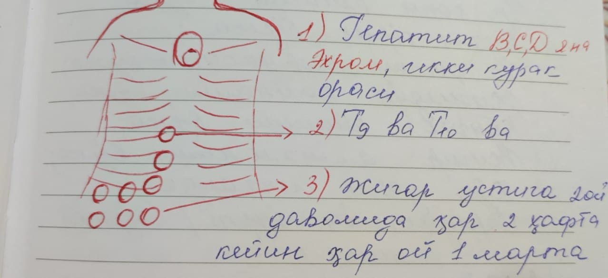
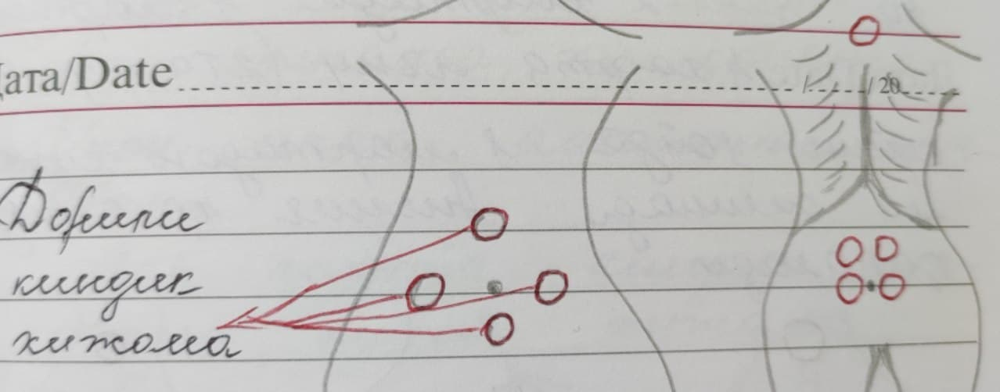
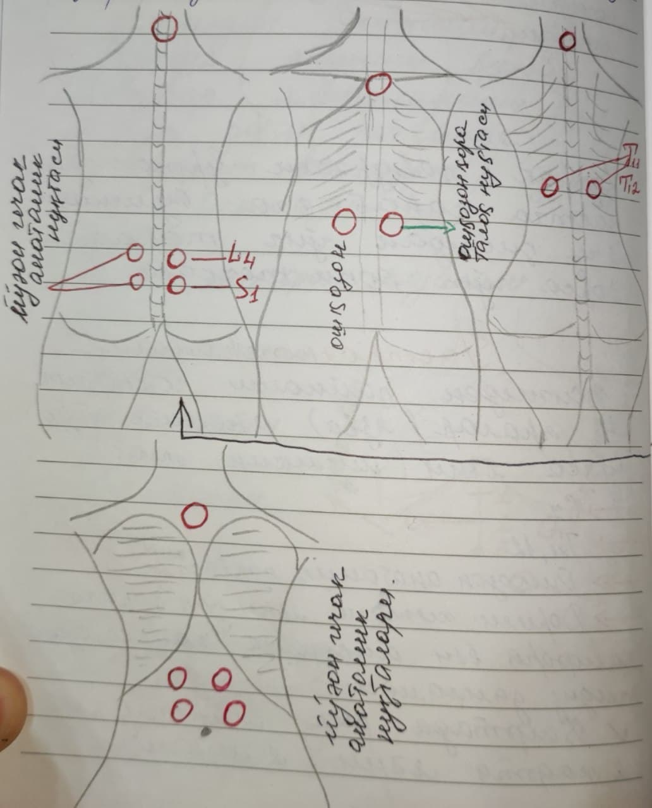
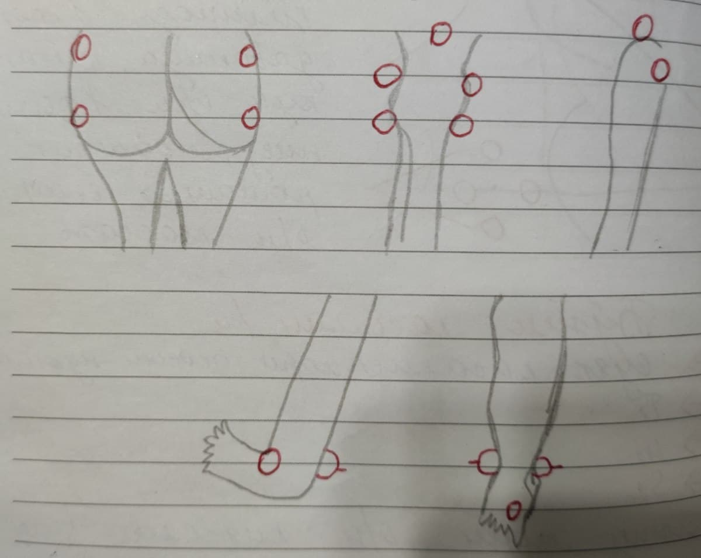
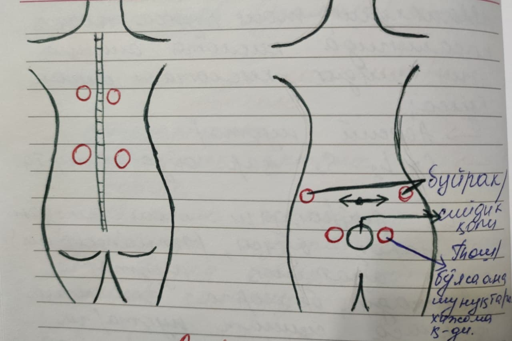
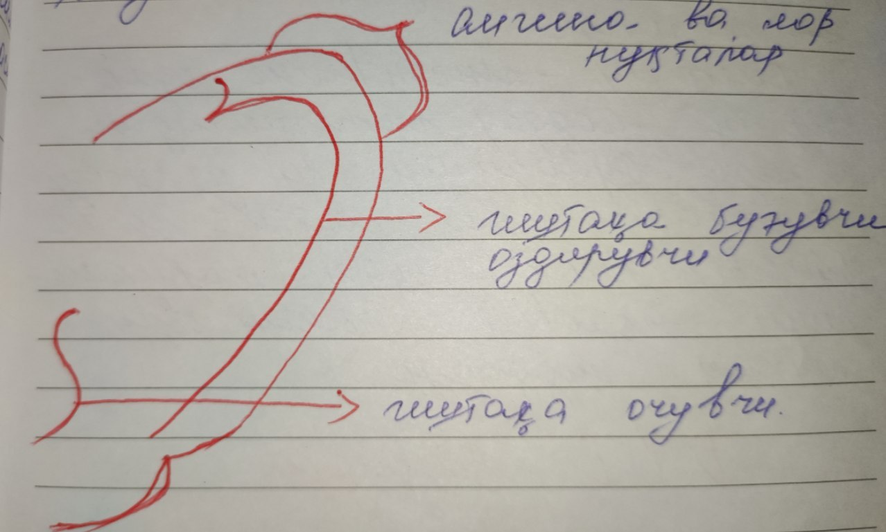

Bismillahir Rohmanir Rohiym
Hijoma - Rasululloh SAV ga me'roj kechasida nozil bo'lgan.
Alloh Taologa hamdu sanolar, U zotning bashariyatiga muallim qilib jo'natilgan Payg'ambarimiz Muhammad SAV ga, ahli baytlariga, sahobai tobeinlariga durudu salovotlarimiz bo'lsin.
Hijoma so'zi - arab tilining Hajama fe'lidan kelib chiqqan bo'lib, "so'rib olish", "tortib olish" degan ma'nolarni bildiradi. حَجَمَ أَلصَّبِيُّ أُمُّهُ "Bola ona ko'kragini emmoqda" degan ma'nolarni bildiradi. Qon olguvchi shaxs ham qonni so'rib olish yo'li bilan olsa uni "Hajjom" deymiz.Qon olish kasbi "Hijoma", asbob uskunalari "Mihjam" deyiladi.
Ba'zi olimlar hijomani so'rib olish asbobi orqali boshning orqa tomonidan qonni chiqarib olishga buyurishgan, shifoligini ta'kidlashgan. Zarkoniy hijoma faqatgina boshning orqaasiga xos emas, balki badanning boshqa o'rinlariga ham mumkin, hamda tanadagi buzilgan qonni chiqarib tashlashi mumkin degan.
So'rib olishga moslangan xoh qadimiy, xoh zamonaviy asbob uskuna bilan buzilgan qonni jasaddan , badandan chiqarib tashlashni "Hidjoma" deyiladi.
Hijoma qadimdan ma'lum va mashhur, qadimgi Chinliklar, Bobilliklar, Xitoyliklar va fir'avnlar davrida ham qo'llashgan.
Hijomaning fazilatlari
Said ibn Jubayr roziyallohu anhu, ibn Abbos roziyallohu anhumodan, u kishi esa Rasululloh SAV dan rivoyat qiladi. Hadisni Imom Buxoriy o'z sahihlarida rivoyat qildilar: Rasululloh SAV aytdilar: "Shifo 3 narsada:
- Asal ichishda
- Mehjam(hijomada ishlatiladigan asbob) ning tilishida ya'nihijoma qildirishda
- O't bilan kuydirishda
"Dori-darmonlarning birortasida ham yaxshilik bo'lmas. Mehjamning tilishida, asal ichishda, o't bilan kuydirishda" deb aytayotganlarida eshitdim dedilar Jobir ibn Abdulloh roziyallohu anhu. (Buxoriy 6583-hadis, Muslim 2205)
Hijomaning foydalari
Qadimda ham hozirda ham juda ko'p kasalliklarni davolashda sezilarli foyda bor ekanligini amalda va tajribada ko'rishdi. Alloh Taoloning izni bilan qon ayirish organ xastaliklari, qon bosimi, yurak xastaligi, ko'krak og'rig'i, nafas qisishi,bosh va ko'z og'riqlari, bo'yindagi , qorin bo'shlig'idagi, muskullardagi bod (revmatizm) kasalliklari va hokazo.
Yana bir tomoni shundaki, ba'zi hollarda hijomaga atrofdan boshqa dori darmonlar qo'shmasdan , o'zi qilinganda foyda bo'lib, og'riqni yengillashtiradi.
Hijoma kunlari
Dushanba, Seshanba, Payshanba, Juma 15,17,19(ro'za tutiladi) oy to'lganda. Hijriy oy to'lganda ro'za tutishga buyuriladi va shu kunlari suv ichilmaydi(suv ichilsa, u suv miyaga chiqadi va inson yengil bo'lmaydi).17, 19, 21 da hijoma qilinadi(och qoringa). Achchiq ,shirin, sho'r, go'sht(oqsil) dan to'siladi
Imom Termiziy Abdulloh ibn Abbos roziyallohu anhumodan rivoyat qilingan hadisda: Rasululloh SAV dedilar:"Sizlar hijoma qiladigan kunlarning eng yaxshisi hijriy, qamariy hisobidagi 17, 19, 21 chi kunlarini tanlasin,sizlardan birortangizni qoni oshib,ketib uni o'ldirib qo'ymasin, ya'ni birortangizniqoningiz suyulib, oshib ketsa , qaysi kuni bo'lsa ham hijoma qildirsin."(Ibn Moja rivoyati Zodul Ma'ad kitobidan).
Och qoringa, ertalab qilingan hijoma yaxshidir, unda shifo va baraka bor bo'lib, aqli va zehni oshadi. Allohning barakasi bilan Dushanba, Payshanba kuni hijoma qiling.(Zodul Ma'ad kitobi 674-bet). (sahar 15gacha mumkin).
Hijoma so'rish kuchi
- yengil
- o'rta
- og'ir
Hijoma turlari
- Quruq
- Sirpanuvchi
- Magnitli
- Olovli
- Qonli
Sunnat nuqtalar
- Alxamma- Qur'onda Alaq surasining 15-16-oyatlarida shu nuqta to'g'risida kelgan.(كَلَّا لَىِٕن لَّمۡ یَنتَهِ لَنَسۡفَعَۢا بِٱلنَّاصِیَةِ نَاصِیَةࣲ كَـٰذِبَةٍ خَاطِئَةࣲ) Harakter asabiylar, falaj psixik kasalliklar, fobiya (vahima), gunohlarga moyillashganda, reaksiyada, yolg'onchilikda ham hijoma shu nuqtaga qilinadi.
Amaliyot
3% perikis ishlatamiz. Sterillash uchun spirt ishlatiladi.In - sovuqlik, yan - issiqlik.
- Kahil nuqta bo'yinda 1-umurtqa pog'ona 2ta barmoqdan keyin Katfin nuqta.
- Ehrom (6 oyda 1 marta qilinadi)
- Ahdayn
- Surunkali kasalliklarda
- Bosh og'riqlarida
- Gipertonik kasalliklarda
- eshitishi past va shovqin bo'lsa
- Migrenda
- Kaahil
- Katfiyn (Ikki kurak o'rtasi)
- Qornir roos(shox)(рога головного мозга)
- Varikun
- Qodam(yuzasi)
Rasululloh SAV ni sehrlashganda kurak pastiga, yurak to'chkasiga qo'yilgan.
Yurak to'chkasiga qo'yish mumkin bo'lmagan holatlar: yuragiga stent qo'yilgan bo'lsa, joyidan siljitish mumkin emas.
O'ng ko'krakni qirrasi gemoglabin, allergiya, immunitetga yaxshi nuqta hisoblanadi.
Ahdayn nuqta yarmi sochga, yarmi bo'yin bankaga kiradi
Zagolka nuqta 72ta dardga davo. Bu nuqtaga 1 yilda 1 marta qilinadi. 3 oy 4 oydan keyin keyin Ehromga qilinadi(Ehrom nuqtaga).
50 yoshdan oshganlarga 6 oyda 1 ta qilinadi. Payg'ambarimiz SAV ehrom holatlarida boshini eng tepa joyidan tildirib ozgina qon chiqarib hijoma qildirganlar.(Sahih hadis) Bu nuqtaga bosh og'riganda, migrenda, miya shamollaganda (ruqiya bilan davolaganda), immunitet oshib ketganda (autoimmun), immunitet tushganda, asabiy psixik kaslliklarda, aql rivojlanishi orqada qolishidanutqida nuqsoni bor, eslab qolish pasayganda, motorikasi yomon bo'lganda qilinadi.
Arab tilida "Ahdayn" so'zi "bo'yin yonlarida" degan ma'noni bildiradi. Hijomada Ahdayn 4ta nuqtagabo'linadi. Har bir nuqtani o'z vazifasi bor.Har bir nuqtaga alohida hijoma qilish mumkin yoki uchchalasiga barobar qo'yish mumkin.
4 ta nuqta
Bu nuqta bo'yin umurtqalarini 7chisi va ko'krak umurtqalarini 1chisi hisoblanadi va bu nuqta bo'yin antrotsiti hisoblanadi, o'z navbatida simpatik nervga ta'luqli. Bu markaziy nerv bir bo'lagi va u tananing harakat funksiyalarini bajaradi. Shu nuqta yordamida signallar suyak miyasiga (xarom mag'iz) yetkaziladi va organizm hamma sistemasi ishlaydi. Bu nuqta organizm uchun og'riq bosuvchi moddani natural holatida ishlab chiqaradi va butun tanani tonusini ko'taradi, shu sababli, shu nuqta har bur kasalliklarda shu nuqtaga hijoma qilinadi.
Abu Kabsha Al Anmari roziyallohu anhudan rivoyat qilinadi: Rasululloh SAV har galgidek bosh pastki orqasi nuqtadan va ikki kurak oralig'idan qon chiqarar edilar va shunday dedilar: Kim shunday qilib qon chiqarar ekan, zararlanmas va boshqa yo'l bilan shifolanishni hojati yo'q (hamma kasalliklarda). Bu sunnnat nuqta ko'krak nuqtalarining 3chi va 4chi umurtqalar atrofida joylashgan ayniqsa o'pka yurak kasalliklarida asosiy nuqta hisoblanadi, shuningdek, hamma kasalliklarda.
Hadis bor, qanchalik aniq ekanligi noma'lum. Shunga qaramay, bu sunnat nuqta, bosh miyadagi gapirish markaziga juda katta terapevtik ta'sir qiladi. Bu nuqta so'zlashish markazini proyeksiyasini o'rtasida joylashgan, peshonasini ariqchasida (asosan har doim chap yarim sharda joylashgani va so'zlash markazini harakatlanishni yaxshilaydi. Qornir roos nuqtasidan quloq chanog'i tepasiga qarab chiziq o'tkazsak bu chiziqni o'rtasida shu sunnat nuqta joylashgan. Hijomada asosan gapirish nutqida duduq, tili chuchuk, logopedicheskiy bolalar qilinadi.
Jobir ibn Abdulloh roziyallohu anhudan rivoyat qilinadi. Abu Az Zubayr dedilar: "Bir kuni Rasululloh SAV oyoqlaridan shikastlanganlarida (sondan) qon chiqartirdilar. Shayx Al-Alboniy :"Haqiqiy" dedilar. Bu hadisdan ma'lumki oyoqqa shikast yetgan joylarga og'riqli, varikozli joylaridga va qon to'plangan ya'ni tromblar, yaralarni yoniga umuman oyoq kasalliklarida qilinadi.
Ma'lum qilinadiki, Anas ibn Molik roziyallohu anhu shunday dedilar:" Bir kuni Rasululloh SAV ehrom holatlarida oyoqlarini yuzidan qon chiqarztiradilar. Bu hadisni Ahmad, Abu Dovud va Nasoiy oyoq yuzi og'riganligi sabab aziyat chekkan edilar, deb ma'lum qildilar. Shayx Al Alboniy hadisni oqladilar. Bu hadisdan biz nuqtalarni aniqlashda yana bitta qoidani qabull qilib, bemorning og'rib turgan joyiga hijoma qlamiz. Hijoma nuqtalarining asosiy va yordamchi anatomik va og'riq zonalar nuqtalariga bo'lib ajratish mumkin. Hadisdan ko'rinib turibdiki Rasululloh SAV ko'proq asosiy nuqtalarga Ц.Н.С ta'sir qiladi, zaruriyat bo'lganda qo'shimcha nuqtalardan hijoma qilinadi(hamma oyoq kasallliklarida).
Asosiy Anatomik nuqtalar

Bo'qoq kasalligi - qalqonsimon bez
- C7, T4,5 (1 kursdan keyin 2tadan qilinadi)
- Ahdayn
- Kekirdak yonlari
- Yelka etli joyni tepasi
- Klyuchitsa suyaklari tagiga
Asoratlari
Ko'z xiralashadi, yurak tez uradi, taxikardiya, jizzakilik va teri kasalliklari
Teri kasalliklari
C7, T3 va teri kasalliklari atrofiga hijoma qilinadi. Agar terida kista bo'lsa hijoma qilinmaydi.
Prostatit
- C7, L2, S2
- Anus atrofidagi anatomik nuqtalar
- Umurtqaning ikki chetiga massajli hijoma
Gemoroy
- C7, T4,5
- Anatomik to'chkalarga anus atrofiga
Yurak kasalliklari
- C7, T4,5 (orqa tomondan)
- Yurakni anatomik nuqtalari
- Orqa kurakdagi og'riq nuqtalar
Surunkali (хронический) kasalliklar
Asosiy nuqtalar, Sunnat nuqtalar, Imkoniyatga qarab ishlatiladi va davomiyligi har oyda 1 marta asosiy to'chkalarga hijoma va massaj qilinadi.
Yuzning 7-nervi
- C7, T9,10
- Anatomik nuqtalar
- Yangi kasalliklar bo'lsa
Har 40 minutda yog' suriladi, kosmeticheskiy massaj, chiroyli joydan boshlash kerak ishlashni: Yuzning hamma nuqtalariga, chakkalariga hijoma qilinadi. Yuz bir tomonga qiyshayadi, qiyshaymagan tomon aslida kasallangan bo'ladi.
Kasallik surunkali bo'lsa, o'tib ketgan bo'lsa, 1 oyda 1 marta hijoma va 1 marta massaj qilinadi.
Astma - nafas qisishi
- C7, T3
- Bosh eng tepasi (Ehrom)
- O'pka anatomik nuqtalari
- Immunitet nuqtasi C7 va ikki kurak o'rtasi
- Og'riq nuqtalari
- C7
- Gaymarit anatomik nuqtalari
- Ahdayn
Burunni tez-tez chayish (tuzli suv, romashka, sedana bilan)
Gaymarit nuqtalar
Venalarni kengayishi (Варикоз)
Anatomik nuqtalar C7, T4,5 va tomir bo'rtgan joylarni atrofiga, ingichkalashgan joylariga hijoma qilinadi, zuluk ham qo'yiladi.
Genitaliy - bepushtlik
Er-xotin davolanishni 1 kunda boshlashi kerak.- C7, L2, S2
- Belning og'riqli joylariga
- Bepushtlikning anatomik nuqtalari
- Varikosilda T4,5
- Agar ayolda sikl buzilishi bo'lsa, ko'krak tagiga qilinadi, qo'shimcha nuqtalarga hijoma qilinadi.
Hijomani ayolda hayz boshlangandan 7-kuni qilinadi. Asal yeb turishadi. Ovqatlanishda uglevodlar yeyish mumkin emas. Oqsil ko'p yeyishadi. Shirinliklar mumkin emas.
Qo'shimcha sunnat to'chkalar

Qand kasalligi (Сахарный диабет)
- Insulin inyeksiyasini olgan nuqtalar atrofiga quruq hijoma
- Ehrom nuqtasiga
- C7, T3, T4, T7, T9, T10, T11, T12
- L1, L2, S1, S2 asosiy nuqtalarga haftada 1 marta qonli hijoma keyin esa 2 haftada va 3 haftaga o'tib toki qondagi qand tushib tuzalguncha
- Tuyani siydigi sutiga qo'shib och qoringa har kuni ertalab ichiladi.
Har xil bosh og'riq kasalliklari
- Cherepno'y davleniya
- Eshitishni yaxshilaydi
- Migren (bosh og'rig'i)
- Quloqdagi shovqin yo'q bo'ladi
- Qattiq bosh og'rig'ida
- Migrenda
- Nerv psixologik kasalliklarda
Jigar kasalliklarida
O'ng tarafga oshqozondan boshlab qovurg'ani tugash tagiga L2 nuqta oxirgisi bo'ladi.
Qorin bo'shlig'idagi kasalliklar (Dorilar va quruq hijoma)
- Oshqozonda - solodka damlamasi
- O'pkaga - gaufa barglari damlamasi yoki kamfora yog'i
- Peshobdan qon aralash chiqsa dub po'stlog'i damlamasi
- O't qopi - komfora yog'i
- Ichakdagi og'riqlar - romashka va yalpiz damlamasi oralatib dorili hijoma qilinadi
O't qopi
- O't qopi olingan bo'lsa
- Kuchli og'riq bo'lsa
- Ich qotish surunkali bo'lsa
- Jig'ildon qaynashi bo'lsa
- Ko'ngil aynishi bo'lsa
- Jigar yallig'lanishi
- Ko'p dori ichganda
- Parazit va qurtlar bo'lsa
- Ahdayn
- T4 va limfa tozalash

Har hafta kindik atrofiga hijoma.
Piyoz moyi , moychechak, romashka moyi bilan.
Ko'krak qovurg'asi o'rtasidan pastga qarab 3ga bo'linadi. 2chi qismdan o'ng tarafga borsa o't qopi to'chkasi.
Gastroenterologiya
Jig'ildon qaynashi gastrit va yaralar (yazva) anemiya yo'q bo'lsa ya'ni (mumkin emas)
- C7
- T11,12
- Oshqozon anatomik nuqtasi
- Dorili hijoma ya'ni o't qopiga kamfora yog'i oshqozonga soladka ildiz damlamasi
Haftada bir martadan 2 martada ya'ni (2 muolaja) va har 2 haftada 1 martadan 4 hafta ya'ni (2 ta muolaja) keyin 1 oyda 1 martadan hijoma qilinadi. Anemiya holatida qaraladi.
Qorin shishganda, sanchib og'riganda, ich qotganda
Yo'g'on ichak anatomik nuqtalari
Har hafta kindik atrofiga quruq hijoma
- C7
- L4
- S1
Bo'g'im kasalliklari
- Suyak kasalliklari asosiy nuqtalari
- T1
- L2
- S2
Yalpiz moyi bilan hijoma qilish, magnit bilan hijoma qilish, tezkor quruq hijoma , bo'g'imlarda sirpantirib (uqalab) hijoma qilish
Autoimmun kasalliklari
Autoimmun kasalliklarga masalan:
- Osteoartrit
- Psoriatik artrit
- Podagra
- Revmatik poliartritda
immunitet nuqtalarni qo'shamiz. Bo'g'im og'riq nuqtalarini hijoma qilamiz.
Buyrak (Почка)
Shamollash, tosh bo'lsa, buyrak kasalligida kislota oshishi ya'ni siydik kislotasi oshgan bo'lsa
- Asosiy nuqtalar
- C7, L2-S2 har oyda 1 marta
Agar buyrakdagi tosh 5 millimetrdan kattaroq bo'lsa, (ehtiyotkorlik bilan) oldin anatomik nuqtalarga qilinadi, bemorga hechnarsa qilmasa, sunnat nuqtalarga o'tiladi, stress, pristup holati bo'lmasa qarab qilinadi.
Почечный давления da
C7, L2, S2, T4,5, shu nuqtalarga davleniya bor paytda 5 minutga hijoma qo'yiladi.
Buyrakda qon bosimi oshganda
Buyrakda tosh bo'lsa 5 millimetrdan katta bo'lsa, hijoma bu nuqtalarga qilinmaydi.(bo'g'imni o'ziga) faqat 5 minutga.
Enurez
Amaliyot natijasida 80% bolalar tuzaladilar va emotsional holati buzilishi bolani tushunmaslik natijasida ya'ni bolaga bosim o'tkazmasdan osoyishta sharoitda quruq hijomani ota onasi qo'yadi. Muolajasi: Sunnnat nuqtalarga: Ehrom, Ahdayn, Kaahil, Katfiyn, L2, S2
Uyga buyuriladi: Uyqudan oldin 15 minut 2 hafta davomida har kuni quruq hijoma qilinadi. Bizning tajribamizda amaliyot shuni ko'rsatadiki, bemor 1-2 haftadayoq tuzaldi, ba'zan amaliyot uzoqqa cho'zilishi mumkin. Ikki hafta davomida tuzalmagan bemorga quruq hijomani kun oralatib yana 2 haftaga buyuriladi.
Bunday muolajalar kichik bemorga fiziologik va ta'sirchanligiga quruq hijoma peshob qonini mushaklarini mustahkamlaydi va oldingi meridian energiyasini tinchlantiradi. Ota onani yordami, bola va ota onani orasini mustahkamlaydi. Kindik atrofida grija va jarrohlik bo'lsa hijoma qilinmaydi.
Shpora
Tuz to'xtatailadi, 2 litrdan ortiq suv ichiladi, toshli darojkada yuriladi, tovonni atrofiga to'ldirib zuluk qo'yiladi. Molning o't qopini ichidagi suyuqlikka 1/1 96% spirt qo'shib, paxtani bintga o'rab , shu suyuqlikka shimdirib, tovonga qo'yib, salafan paket kiyib yotiladi.
Garmonlar bilan bog'liq kasalliklar
- Miyada - joylashgan gipofiz bezi organizmdagi bezlarni boshqaradi.
- Gipoterioz - yo'd ortib ketgan ( yo'd zuluk mumkin emas)
- Gipoterioz - qalqonsimon bezni garmonlarning ko'payib ketishi va kamayib ketishi organizmda ko'p kasalliklarga sabab bo'ladi. M.A.B (moddalar almashinuvining buzilishi), bo'shashish, horg'inlik, xotiraning susayishi, beparvolik, ko'z atrofi shishadi, jazirama issiq vaqtida tirnoqlar sinadi, et uvishadi, sarg'ayish bo'ladi, bo'y o'smaydi.
Yo'd yetishmasa - Endokrin buqoq, kichkina
Qalqonsimon bezning bir tekisda kattalashishi diforuzniy buqoq , rangi sariq, bo'y past va tirnoqlari sinuvchan bo'ladi.
Davosi: hijoma, zuluk, oqsil, yo'd, dukkakli o'simliklar, hazm dori, kist, qora sedana.
Giperteriozga - zuluk, yo'd mumkin emas.
Insonda 6ta bezlar bor:
- Gipofiz bezi (miyada joylashgan)
- Qalqonsimon bez
- Sinus bezi (ko'krak o'rtasida)
- Oshqozon osti bezi
- Tuxumdon bezlari (2ta)
- Buyrak usti bezi (2ta)
Gipofiz bezi yaxshi ishlashga yordam beradi, reaksiyani oshiradi. Yo'dlarni va antioksidantni boshqaradi, bu bosh vazir.
Immunitet yoki qalb nuqtasi. Shaqqussodr - ko'krak yorilishi. Ovozimizga, mushaklarga javob beradi. Insulin ishlab chiqadi. Adrenalin va garmon (jinsiy) ishlab chiqadi, ish soati kechki vaqt.
Gipoterioz davosi:
Hijoma, zuluk, yo'dli sirka, hayvon va o'simlik oqsillari, yo'd priparatlari, yong'oq, bruklin karomi, hurmo, arab xurmosi yeyiladi. Hazm dori bilan kistal beriladi.
Giperterioz davosi:
Yo'd, zuluk mumkin emas. Hijoma mumkin. Hazm dori, tinchlantiruvchi yurak dorilari beriladi. Arab hurmosi, valerianka, arslonquyruq, qora sedanali dorilar beriladi.
Qon va yurak
Yurak bu naso's. Yurak 4 qismga bo'lingan. Yurakdan chiqadigan tomirlarni nomi Arteriya. Arteriyalar kislorodga to'yingan bo'ladi. Arteriyalarning devorlari qalin bo'ladi. Yurakka quyiladigan qon tomirlarni nomi Vena deb nomlanadi.
Arterokleroz - Arterial qon tomirlari devorlari qalinlashadi va sinadi.
Venalar qon tomir kasalliklariga variko'z va bachadon kasalligi kiradi.
Variko'z bu qon tomir devorlarida tro'mb hosil bo'lishi. Olinayotgan mahsulotlar tufayli qon quyuqlashadi(himikatlar, toksinlar)
Yurak muskullarida shamollash jarayoni bo'ladi Angina sababli bakteriya kasalliklar, gripp-viruslar tufayli yurakda shamollash bo'ladi.
Davosi: Myata, melisa, limo'n o'ti, koritsa, qora sedana, zanjabil.
Yurakdagi qurtlarning nomi Mistoma deyiladi.
Arterosklerozning asosiy sababi depressiya. Depressiyada qon tomirlari yupqalashadi yoki qalin bo'lib qoladi.
Ingichka ichak bilan yurak er-xotin a'zolar. Ingichka ichakda 13-guruh vitaminlar suriladi, agar bo'lmasa diareya kuzatiladi. 40 yoshdan oshgan ayollarda ichak raki ko'payadi.
Qaysi holatlarda hijoma qilinmaydi?
Qonli hijoma:
- Adamovaya yablochka (kekirdak) ustiga mumkin emas.
- Bosh chanoq suyagi ustiga qilinsa bemor eslab qolish xususiyatini yo'qotadi va fikrlash qobiliyatini yo'qotishi mumkin.
- Vakum bankani qattiq tortishlik bu holatda kuygandek pufaklar hosil bo'lishiga olib keladi.
- Agar terida shamollash bo'lsa, ( teri bir oz qizargan va qo'lingizdan teri issiqroq bo'lgan joylariga).
- Jarrohlik qilingan o'ringa qo'yilmaydi.
- Tro'mblar ustiga qo'yilmaydi.
- Bemorda ichki va tashqi qon ketishida.
- Qon quyilib qotishiga qarshi dori qabul qilayotganda qonli hijoma qilinmaydi, quruq hijoma qilinadi.
- Bemor gemodializ muolajasini o'tayotgan bo'lsa, hijoma qilinmaydi, agar gemodializ muolajasini 1 yoki 2 marta qilingan bo'lsa ukolda hijomasi surunkali o'tayotgan bo'lsa, qoni juda suyulib salomatligiga katta xavf tug'diradi.
- Yurak jarrohligini o'tkazgan bo'lib va bemorga sun'iy yurak ritmini ta'minlaydigan o'rnatilgan bo'lsa ham hijoma qilinmaydi(yurakka).
- Qon bosimi juda yuqori bo'lib turgan holatda hijoma qilinmaydi, oldin qon bosimi tushiriladi.
- Tro'mblarni ustiga ko'rinib turgan tomirlar ustiga vanalar kengayishi ustiga qiinmaydi.
- Qon suyuqligi (Gemofiliya) bor bemorlarga hijoma qilinmaydi.
- Anemiyada (juda past bo'lsa).
- Hijoma muolajasidan juda qattiq qo'rqsa tushuntirib ko'riladi.
- Bachadon operatsiyasi bo'lgan bemorlarga bachadon sheykasiga hijoma qilinmaydi.
Ehtiyot choralari:
- Psoriaz bo'lgan bemorlarga ekzema bemorlarga, jarrohlik joylariga qilinmaydi.
- Morfin qilayotgan bemorlarga mumkin emas, hijoma qilinsa morfin moddasi ko'payib ketadi, og'riq kuchayadi.
- Homilador ayollarga birinchi va oxirgi 2 oy ko'krak olti to'chkalar , bel, son to'chkalar ichiga hijoma qilinadi.
- Oshqozonda yazva bo'lsa qonli hijoma qilinmasdan dorili saludkani ildizi damlamasi bilan hijoma qilinadi.
Psoriaz kasalligi
Oq dog'li, bo'rtib chiqqan bo'ladi, qichishadi. 2 xili bo'ladi:
- Kesilgan, tilinganjoydan ko'payadi.
- Kesilsa ham, tilinsa ham ko'paymaydi.
Quyoshda olib yurish kerak, D vitamin , kalsiy, xalades ichiriladi. Hijoma va zuluk shifoli.
Umurtqa suyaklari orqasidagi jelesimon moddalarni ezilishi protruziya deyiladi, o'sha ezilgan moddaning do'ppayib chiqib qolishi grija deyiladi, o'sha grija chiqqan joydan qaysi ustidan chiqqan bo'lsa o'sha joyda og'riq bo'ladi.
OXC
Xilt o'zi nima? - bu ho'l oquvchan modda bo'lib yegan ovqat xiltga aylanadi.
Xilt - odam badaniga har xil oziq moddalarni o'zgarishligidan jigarda hosil bo'lgan murakkab suyuqlikni umumiy nomi bo'lib, u savdo, safro - qon - balg'am - xiltdan iborat 4 ta suyuqlikdir <-> jigarda.
Xiltlar - Insonlarning oziq-ovqat moddalar iste'molidan paydo bo'ladigan va uzluksiz sarflanib va qayta hosil bo'laveradigan odam tirikligini saqlovchi, ta'minlovchi muhim moddadir.
OXC bosqichlari
1) Og'izdan to jigargacha bo'lgan masofa. 1 hazm tishlaganda suyuqlik ajraladi.
So'lakda - fermentlar ko'p lezatin fermenti bor. So'lakda juda ko'p foyda bor.
Og'iz bo'shlig'idaMexanik ishlov - chaynash
Termik ishlov - tishlash, isitish
Fermentativ ishlov - so'lak bezlari
Oshqozonda - Oshqozon osti bezi fermentlari oshqozonning o'z fermentlari (xlorid kislota) jigar o't qopidan 12 barmoq ichakka ochiluvchi o't suyuqligi . Oldi tarafdan Oshqozon charvi bilan o'ralgan. Chap tomondan taloq issiqligi, o'ng tomondan jigarning to'g'ma issiqligi bilan o'ralgan shularning hammasi oshqozonga ta'sir qiladi. Natijada yegan taomimiz nilus - kimusga aytiladi.
12 barmoq ichakIngichka ichakda hazm jarayoni ancha takomillashadi. Moosariqa Tomir (varsinka) orqali so'rib jigarga boriladi.